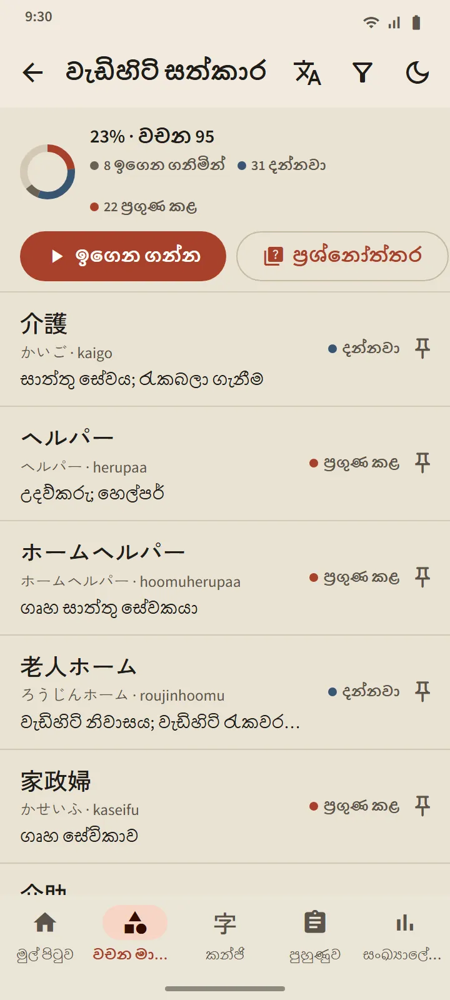

වචන මාලාව
ඇත්තටම මතක හිටින වචන මාලාවක්
සෑම කාඩ්පතක්ම නවීන පරතරයක් සහිත පුනරාවර්තන (spaced repetition) ඇල්ගොරිතමයක් වන FSRS මඟින් සැලසුම් කෙරේ. ඔබම ඇගයීම කරන්න, එවිට වචනය නැවත එන්නේ කවදාදැයි යෙදුම ගණනය කරයි: ඊළඟ පරතරය සෑම බොත්තමකම මුද්රිතව පෙන්වයි. වචන නව සිට ඉගෙන ගනිමින් සහ දන්නවා හරහා ප්රගුණ කළ දක්වා නැඟෙන අතර, අවසාන අදියරට ළඟා විය හැක්කේ ප්රශ්නෝත්තරයක් හරහා පමණි.
- කණ්ඩායම් 11ක මාතෘකා 95ක්. රැකියා ස්ථාන කණ්ඩායමේ මාතෘකා 21ක් ඇත: ප්රධානියාගේ උපදෙස්, රැකියා ආරක්ෂාව, කාලසටහන් සහ ගිවිසුම්වල සිට කර්මාන්තශාලා, ඉදිකිරීම්, කෘෂිකර්මය, අවන්හල්, හෝටල් සහ වැඩිහිටි සත්කාරය දක්වා.
- සෑම තට්ටුවකටම තිරයක්. සම්පූර්ණ වූ ප්රතිශතය, සෑම වචනයකම තත්ත්වය, ඉගෙන ගන්න සහ ප්රශ්නෝත්තර බොත්තම්.
- වචන 38,085ක සාක්කු ශබ්දකෝෂයක්. කන්ජි, කානා, රෝමාජි හෝ අර්ථයෙන් සොයන්න.
